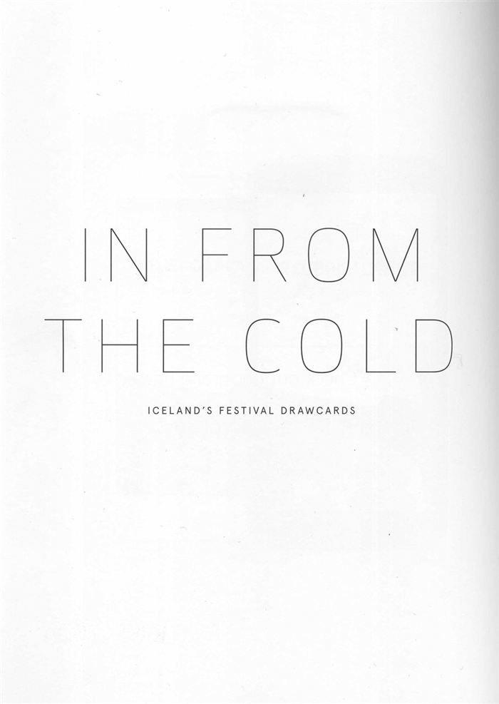
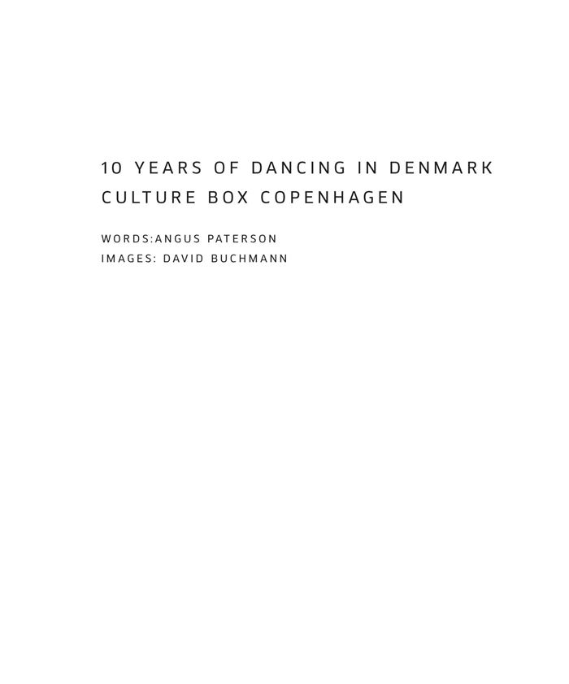
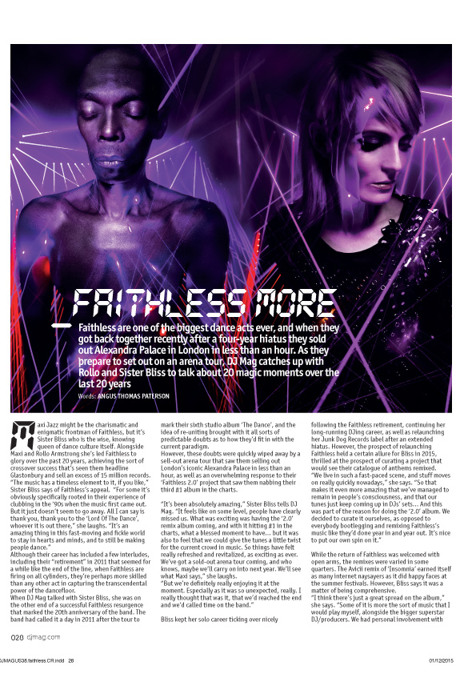
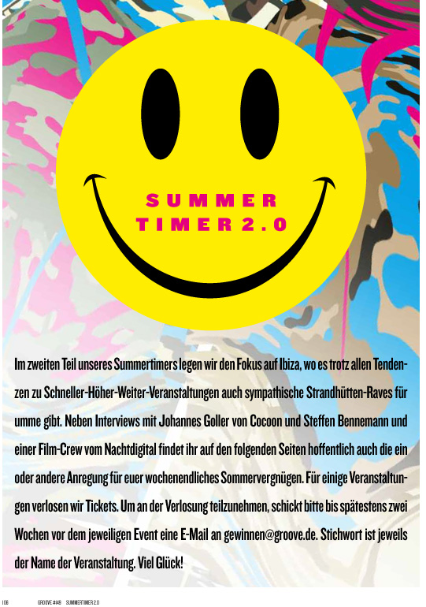
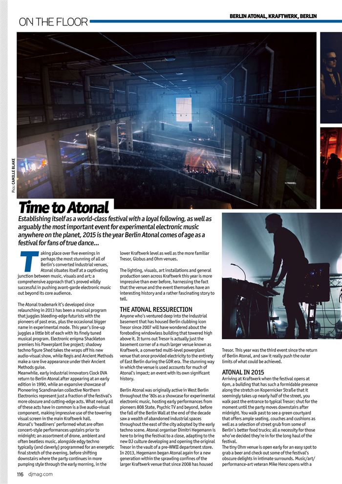
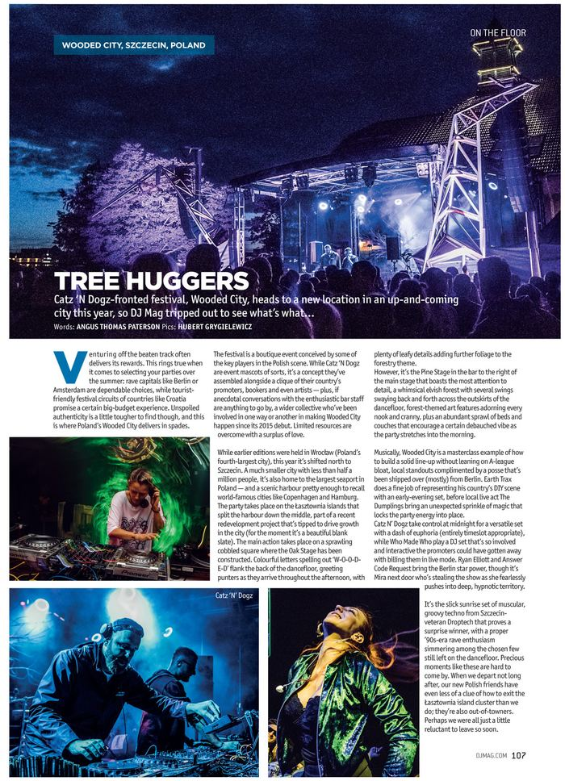
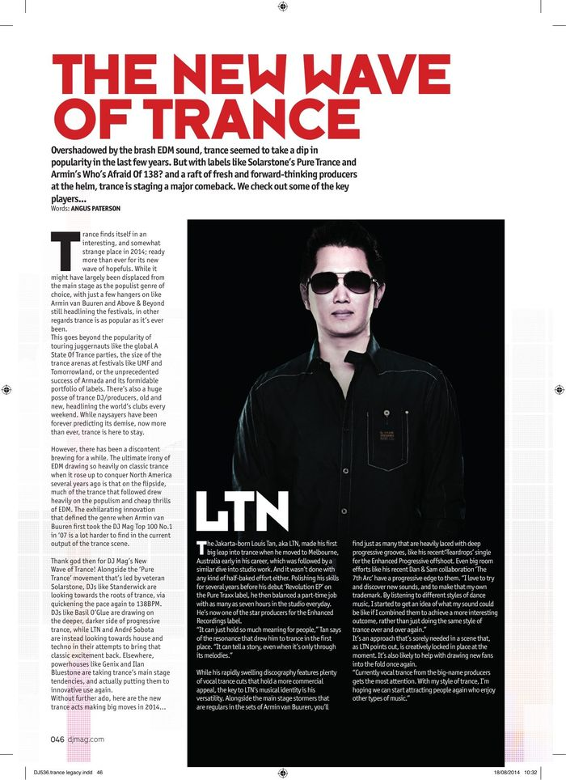
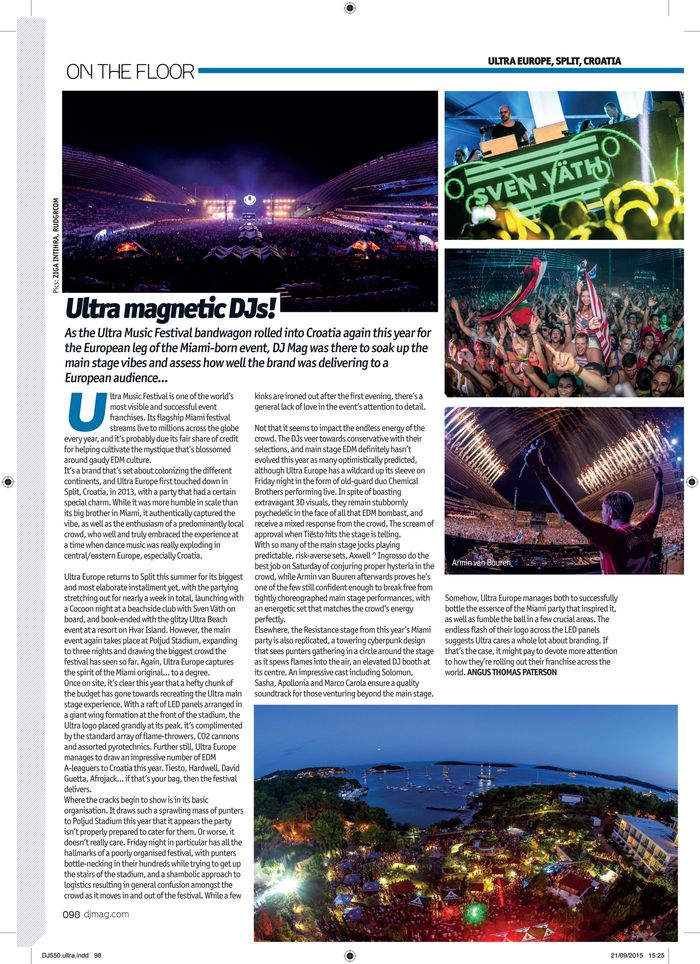

Print Features

In From the Cold: Iceland's Festival Drawcards
September 2017
Spotify feature for DJ Broadcast ADE Edition 2014

Dancing in Denmark: 10 Years of Culture Box in Copenhagen

20 Years of Faithless

Cocoon Ibiza Profile for Groove Magazine

Berlin Atonal Feature for DJ Mag
March 2017
Wooded City Festival review for DJ Mag

The New Wave of Trance
August 2014
Ultra Europe review for DJ Mag
October 2015